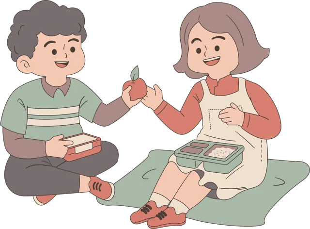
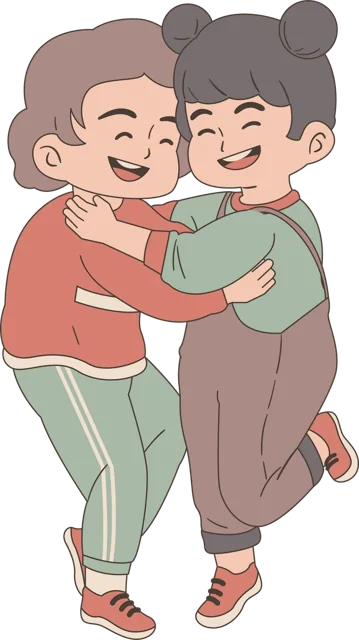

第 2 站
什麼是『霸凌』？
『霸凌』是……點一下卡片，看四個重點。

同學、朋友之間要彼此尊重。今天一起認識什麼是霸凌、霸凌有哪些種類、怎麼拒絕霸凌，以及可以找誰幫忙。
公埔國小學務處 生教訓育組長 張奕軒老師

我們是『同學』——

『霸凌』是……點一下卡片，看四個重點。
霸凌有六種。點一下卡片，翻過來看說明。
點一下卡片，看拒絕霸凌的四個方法。
點一下句子，全班一起說出來！
把卡片分一分：這是「可以找誰」，還是「怎麼找」？
24 小時都有人接。被欺負或看到別人被欺負，都可以請大人陪你一起打。
有問題嗎？最後，一起記住這兩句話（點一下打勾）：